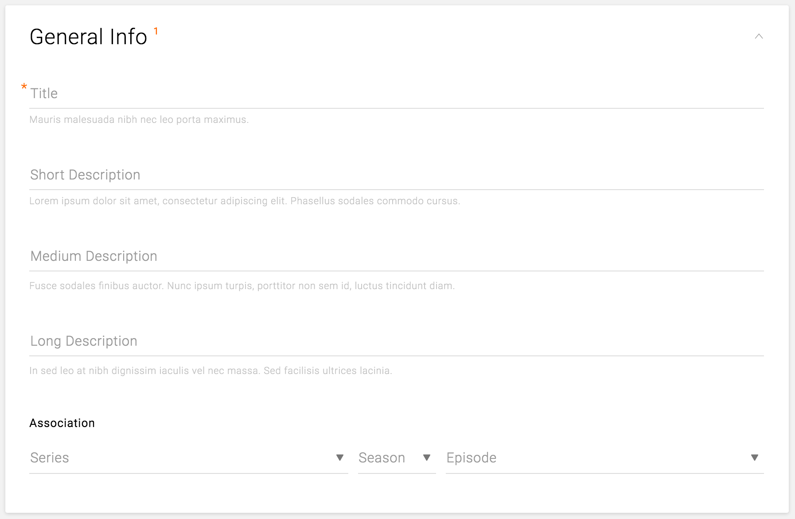

The most used component, text fields allow users to input the necessary information to create and edit content. Text fields allow the user to input text, select text, and lookup data via auto-completion.

Series General Info Card